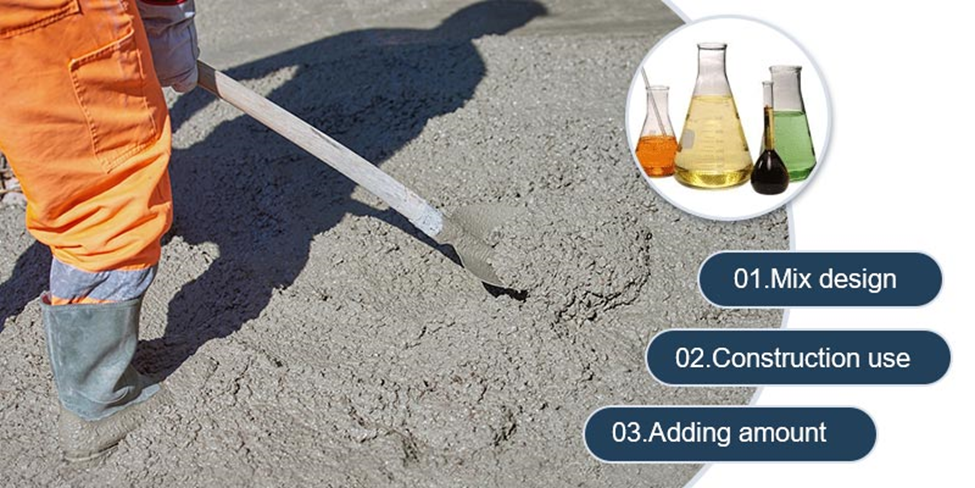

افزودنی های بتن را در 8 دقیقه بیاموزید
افزودنی های بتن را در 8 دقیقه بیاموزید
افزودنی بتن چیست؟
افزودنی بتن ماده ای است که برای بهبود عملکرد بتن قبل یا در حین اختلاط بتن اضافه می شود. مقدار افزودنی بتن به طور کلی حد اکثر 5 درصد مقدار مواد سیمانی می باشد.
از آنجایی که می تواند به طور موثر عملکرد بتن را بهبود بخشد و دارای مزایای اقتصادی خوبی است، افزودنی های بتن در مهندسی بیش از پیش مورد توجه قرار گرفته اند. انتخاب، روش افزودن و سازگاری مواد افزودنی بتن به طور جدی بر عملکرد بتن تأثیر می گذارد.
نسبت مواد افزودنی بتن باید با توجه به تغییرات محیط بتن ریزی، شرایط آب و هوایی و شرایط خارجی تعیین شود. بنابراین، انتخاب مواد افزودنی باید مطابق با الزامات استفاده در محل، برای اطمینان از کیفیت بتن و کنترل منطقی هزینه پروژه باشد.
طرح اختلاط
در طرح اختلاط عموماً مقاومت بتن باید بر اساس قطعه مورد استفاده در پروژه تنظیم شود. الزامات مقاومت بتن، خواص فیزیکی و شیمیایی مواد افزودنی و انواع افزودنی ها باید در نظر گرفته شود تا نیازهای طراحی شاخص های مختلف را برآورده کند.
تست در محل
پس از آزمایش نسبت های بتن در آزمایشگاه، از آنجایی که وضعیت واقعی در محل با مقادیر پارامتر تعیین شده توسط آزمایشگاه ناسازگار است، نسبت مواد افزودنی باید در مح پروژه به طور مناسب تنظیم شود تا نیازهای استفاده واقعی در محل را برآورده کند.
مقدار مواد افزودنی استفاده شده
مقدار مواد افزودنی مورد استفاده تأثیر مهمی بر عملکرد بتن دارد. مقدار مصرف باید مراحل محاسبه دقیق، نسبت علمی در آزمایشگاه و تنظیم در محل را طی کند و در نهایت مقدار مصرف معقولی را بدست آورد.

انواع مواد افزودنی بتن و عملکرد آن ها
از آنجایی که افزودنی ها می توانند به طور موثر عملکرد بتن را بهبود بخشند و مزایای اقتصادی خوبی داشته باشند، در بسیاری از کشورها به طور گسترده مورد استفاده قرار می گیرند و به یک ماده ضروری در بتن تبدیل می شوند.
16 نوع افزودنی متداول بتن وجود دارد که به طور تقریبی با توجه به عملکردشان به 5 دسته تقسیم می شوند.

افزودنی کاهنده آب: در شرایطی که اسلامپ بتن اساساً یکسان باشد، می تواند مصرف آب در فرآیند اختلاط را کاهش دهد.
عامل افزایش مقاومت اولیه: توسعه مقاومت اولیه بتن را تسریع می کند و تأثیر قابل توجهی بر مقاومت بعدی ندارد.
کند گیر کننده بتن: زمان گیرش بتن را افزایش دهید.
افزودنی حباب هوا: تعداد زیادی حباب ریز هوا در طول اختلاط بتن ایجاد می شود.
افزودنی کاهنده آب با قدرت بالا: در شرایطی که اسلامپ بتن اساساً یکسان باشد، می تواند مصرف آب را در فرآیند اختلاط کاهش دهد.
مواد افزودنی کاهنده آب زودگیر: عملکردهای عامل استحکام اولیه و افزودنی کاهشدهنده آب را دارد.
عامل کندگیر کننده و کاهنده آب: هم عملکرد کندکننده و هم ترکیب کاهنده آب را دارد.
عامل حباب هوا و کاهنده آب: هم عملکرد افزودنی حباب هوا و هم ترکیب کاهنده آب را دارد.
عامل کاهنده نفوذپذیری: نفوذپذیری آب بتن تحت فشار هیدرواستاتیک را کاهش می دهد.
افزودنی ضد خوردگی: مانع یا کاهش خوردگی میله های فولادی یا سایر فلزات جاسازی شده در بتن می شود.
عامل حباب هوا: در حین تولید بتن، در اثر واکنش شیمیایی و انتشار گاز، تعداد زیادی منافذ در بتن ایجاد می شود و اصطلاح فوم بتن ایجاد می کند.
عامل انبساط: باعث انبساط بتن در حجم معینی می شود.
ضد یخ زدگی: بتن را در دمای منفی به گیرش می رساند و در مدت زمان مشخص به مقاومت کافی در برابر یخبندان دست پیدا می کند.
رنگ: تولید بتن با رنگ ثابت و مشخص.
افزودنی تسریع کننده: بتن را به سرعت سخت کنید.
عامل پمپاژ: بهبود قابلیت پمپاژ مخلوط بتن.
نقش مواد افزودنی در بهبود عملکرد بتن

- می توان میزان آب مصرفی در بتن را کاهش داد و یا بدون افزودن آب، جریان بتن را افزایش داد.
- زمان گیرش بتن را تنظیم کنید.
- کاهش خونریزی و جداسازی و بهبود کارایی و مقاومت در برابر آبشویی.
- کاهش تلفات اسلامپ و افزایش قابلیت پمپاژ بتن.
- انقباض را کاهش دهید و افزودن عامل انبساط نیز می تواند انقباض را جبران کند.
- حرارت هیدراتاسیون اولیه بتن را به تأخیر انداخته، سرعت گرمایش جرم بتن را کاهش داده و بروز ترک را کاهش می دهد.
- بهبود مقاومت اولیه بتن و جلوگیری از یخ زدگی در دمای منفی.

- بهبود استحکام، و افزایش مقاومت در برابر سرما، مقاومت در برابر سایش و مقاومت در برابر خوردگی.
- کنترل واکنش بین اجزای قلیایی و سنگدانه، برای جلوگیری از خوردگی فولاد و کاهش انتشار کلرید.
- بتن با خواص خاص دیگری قابل ساخت است.
- کاهش ویسکوزیته بتن.
اقدامات احتیاطی هنگام استفاده از افزودنی های بتن
مقدار و روش استفاده از افزودنی های بتن شامل محدودیت های خاصی است. استفاده از آن باید با توجه به شرایط واقعی محل ساخت و ساز، تکنولوژی ساخت بتن و عوامل اقلیمی و محیطی مورد توجه قرار گیرد و نمی توان از آن خودسرانه استفاده کرد.
انتخاب نوع مناسب افزودنی یک پیش فرض مهم است و اجتناب از خرید محصولات تقلبی و نامرغوب بر پیشرفت پروژه تاثیر می گذارد. برای افزودنی های مورد استفاده، لازم است به شدت بررسی شود که آیا کیفیت با الزامات واقعی محل ساخت و ساز مطابقت دارد یا خیر، دستورالعمل های محصول را به دقت بخوانید و آزمایش های لازم را در آزمایشگاه انجام دهید و همچنین الزامات مشخصات بازرسی کیفیت مواد را برآورده کنید.
قسمت های مختلف پروژه بتنی در محل ساخت و ساز، الزامات متفاوتی برای مقاومت بتن دارند. علاوه بر این، اثر واکنش شیمیایی یک ماده افزودنی در کاربردهای مختلف در کنار سیمان با خواص مختلف، نیز متفاوت است.
بنابراین، انتخاب انواع سیمان به یک پیوند مهم کنترل کیفیت تبدیل شده است. همچنین آزمایشگاه باید آزمایش های مقایسه ای را بر روی اثرات واکنش شیمیایی انواع مختلف سیمان در یک مخلوط انجام دهد. مقدار و دامنه استفاده از مواد افزودنی نه تنها باید بر اساس تجربه ساخت و ساز قبلی باشد، بلکه باید بر اساس نتایج آزمایش باشد تا اطمینان حاصل شود که استفاده از افزودنی با الزامات کیفیت مطابقت دارد.
قبل از استفاده از افزودنی های بتن، کنترل کیفیت سازه مهندسی ضروری است. علاوه بر این، ویژگی های شیمیایی ماده افزودنی باید توسط یک آزمایشگاه تست حرفه ای آزمایش شود، مانند خواص فیزیکی و شیمیایی عامل انبساط، محتوای اکسید منیزیم، محتوای قلیایی کل، محتوای آمونیاک در خواص شیمیایی، و ظرافت. در خصوصیات فیزیکی و غیره. اگر شرایط کیفی را برآورده می کند، سپس به تست تطبیق آزمایشی بعدی بروید.

تاثیر مواد افزودنی بتن بر اسلامپ
در شرایط عادی، اپراتور مقدار معینی از عامل کاهنده آب را به بتن اضافه می کند تا به هدف افزایش اسلامپ بتن برسد که می تواند کارایی بتن را به طور موثر بهبود بخشد.
لازم است از روش افزودن آب در محل ساخت و ساز برای بازیابی اسلامپ بتن اضافه شده با افزودنی کاهنده آب استفاده شود. اما این روش مقاومت و سایر خواص بتن را به میزان قابل توجهی کاهش می دهد که ممکن است منجر به ترک خوردن بتن، سخت شدن غیرعادی و سایر پدیده ها شود.
به منظور حل موثر مشکل افت اسلامپ بتن مخلوط با عامل کاهنده آب، استفاده از روش هایی مانند افزودن عامل کاهنده آب به صورت دسته ای توصیه می شود.
در میان روش های ذکر شده، روش اختلاط دسته ای نه تنها می تواند به طور موثر از مشکل افت اسلامپ بتن جلوگیری کند، بلکه هزینه تولید را تا حدودی کنترل کرده و مزایای ساخت بتن را به حداکثر برساند.

سازگاری مواد افزودنی بتن با بتن
انتخاب مواد افزودنی بتن تا حد زیادی بر عملکرد بتن تأثیر می گذارد، بنابراین انتخاب افزودنی های بتن تعیین می کند که آیا مواد افزودنی با بتن سازگار هستند و سپس مشخص می کند که آیا می توان پروژه را با کیفیت بالا انجام داد یا خیر.
بنابراین، انتخاب بتن بسیار مهم است. ابتدا خواص بتن مورد نیاز برای شرایط ساخت را تعیین کنید، سپس نوع ماده افزودنی مورد نیاز را انتخاب کنید و آزمایش های سازگاری را انجام دهید.
افزودنی های مختلف ویژگی عملکردی دارند و نمی توانند به جای یکدیگر استفاده شوند، در غیر این صورت ممکن است منجر به اثرات منفی شود. در عین حال، مواد مورد استفاده در بتن مانند سیمان، ماسه و شن، مواد افزودنی و غیره باید استانداردهای صنعت مربوطه را داشته باشند.

رابطه بین مقدار افزودنی بتن و مقاومت بتن
مقاومت بتن ارتباط تنگاتنگی با مقدار مواد افزودنی بتن دارد. مواد افزودنی ناکافی منجر به کاهش کارایی بتن می شود. همچنین باعث کمتر شدن اسلامپ و روانی اولیه بتن، کاهش مقاومت بتن و ایجاد مشکل در ساخت و ساز می شود.
با این حال، اگر مقدار افزودنی بیش از حد باشد، شدت کاهش آب، افزایش اسلامپ و سیالیت بتن ممکن است بسیار زیاد باشد و سبب جداشدگی در بتن شود که بر مقاومت بتن تأثیر می گذارد.
در عین حال، افزودن بیش از حد مواد افزودنی نیز ممکن است بر فرآیند هیدراتاسیون بتن تأثیر بگذارد. در صورت افزودن کندگیر بیش از حد، زمان گیرش بتن افزایش می یابد و پیشرفت پروژه تحت تاثیر قرار می گیرد.
برهمکنش بین مواد افزودنی بتن
در طول تولید بتن، می توان افزودنی های مختلف بتن را برای بهبود عملکرد بتن اضافه کرد. معمولاً مواد افزودنی هر کدام دارای ویژگی عملکردی هستند، اما هنگام استفاده از دو یا چند افزودنی باید به سازگاری متقابل عملکرد آنها توجه شود. اگر عملکرد دو افزودنی با هم سازگار نباشد، ممکن است اثرات متضادی داشته باشند.
بهترین مطالب هر ما
ارسال میشه به صندوق پستی شما!
این بالا کلیک کن و ایمیلت رو بنویس
ثبت